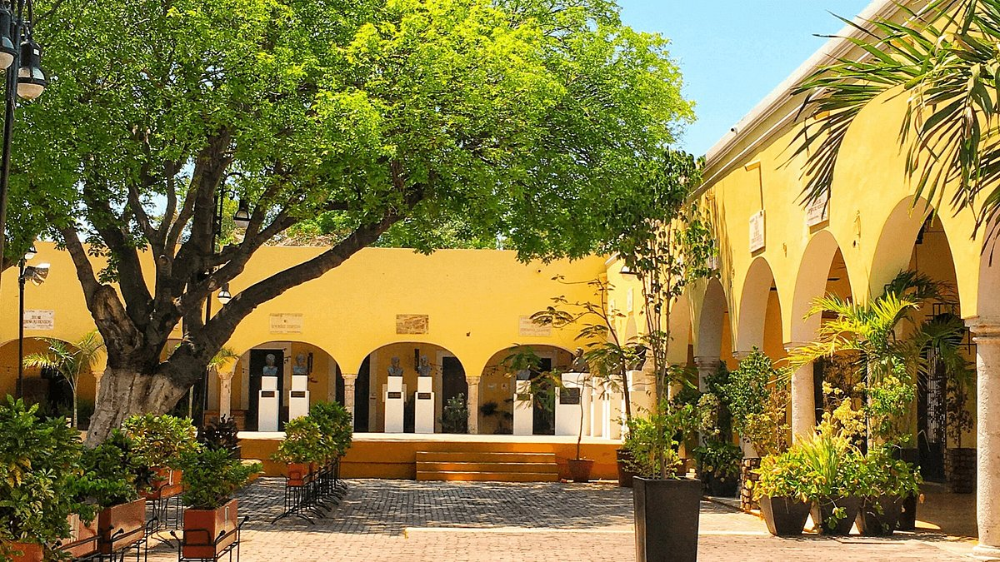
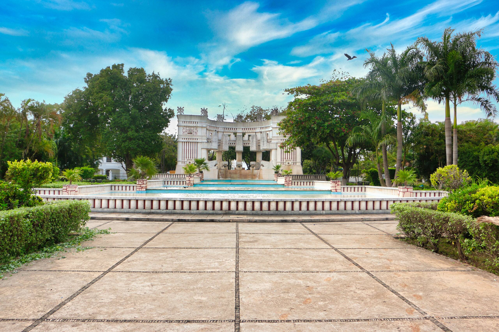
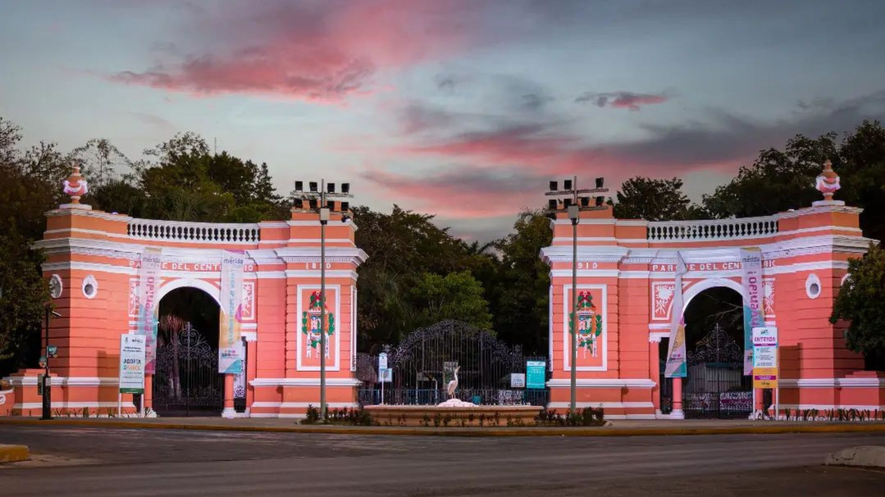

Parque Santa Lucía
Es uno de los rincones más antiguos y con más historia de la ciudad. Famoso por sus tradicionales noches de trova yucateca y por albergar las icónicas sillas gigantes confidentes.


Es uno de los rincones más antiguos y con más historia de la ciudad. Famoso por sus tradicionales noches de trova yucateca y por albergar las icónicas sillas gigantes confidentes.

Un enorme y hermoso espacio familiar de estilo neomaya. Cuenta con una impresionante fuente monumental iluminada, una concha acústica y una biblioteca rodeada de frondosos árboles.

El parque zoológico más tradicional de Mérida. Ideal para familias, donde destaca su famoso trenecito que realiza un recorrido completo por las instalaciones del parque.